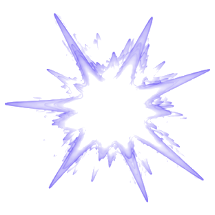
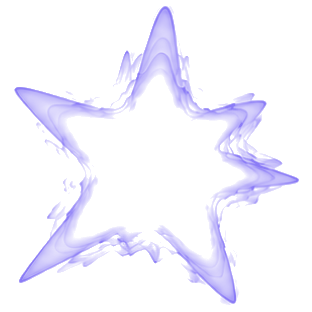
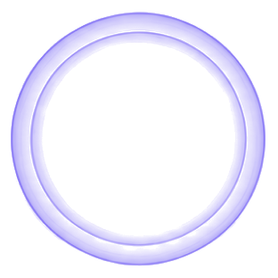
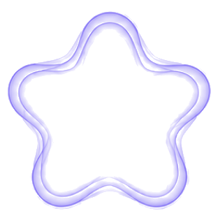
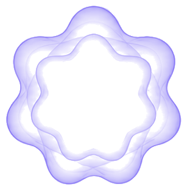

soma
case study, 2026
Прислушайся
к ритмам
своего тела.
Listen to the rhythms of your body. A quiet app for reading sleep, mood and cycles — designed for people who are tired of being told what to do.
ResearchUXUIMotion
01 — onboarding
02 — check-in
No smileys. Five shapes
that don’t judge you.
Faces read as a verdict. Abstract forms — from a sharp burst to a soft flower — let a person name a bad day without feeling they failed it.

Ужасно

Плохо

Нейтрально

Хорошо

Отлично
03 — practice
Две
минуты.
When energy is low, even a simple task is too much. Practices are short, picked by today’s state, and end with a small, quiet “well done”.
a · choose
b · breathe
c · rest